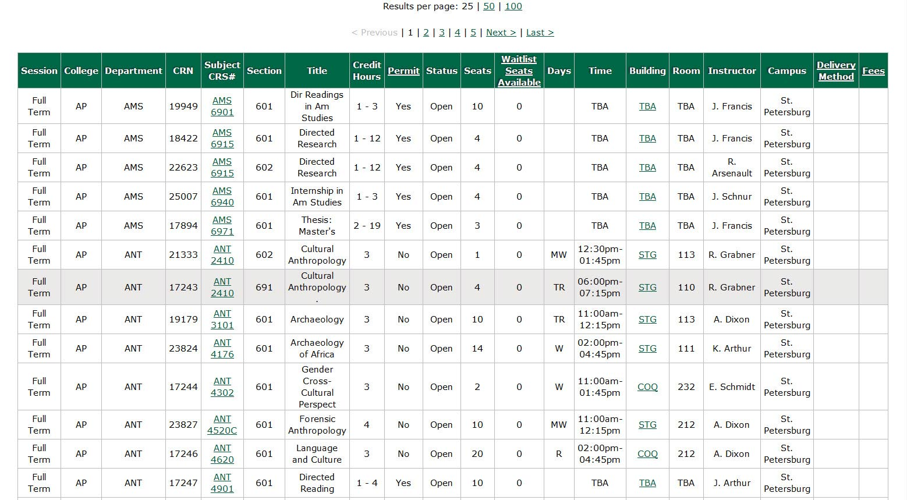

The USFSP Online Student Support Portal team, consisting of Dr. Casey Frechette, Mr. Berrie Watson, and Ms. Sharon Austin, was tasked with designing a robust web presence that would help USFSP’s online students to accomplish tasks to advance their academic careers without coming to campus. Needs related to orientation, registration, advising, research and study, and other were considered. The portal was intended to cover all aspects of the online student’s college experience outside of the virtual classroom.
Accounting for all campus departments and units relevant to these tasks resulted in a massive amount of information and diverse set of stakeholder needs. A traditional approach to such a task might involve compiling a comprehensive set of links, and in fact, the first design efforts reflected this approach. A screenshot of the initial version may be seen below. Even at this early stage, it may be seen that developement drove towards a personalized experience for the student. Alerts with personal messages are already available.
Initial Design of the Online Student Support Portal
At this stage, we had successfully implemented some of the fixes for certain problems identified by stakeholders. For example, by clicking the "Courses" tab a student would be able to find all the courses needed for that semester or the next. Previously, students would have to have multiple windows open to accomplish the same thing. In many ways, this initial version solved a significant number of the itesm on a "checklist" of problems identified by the stakeholders.
However, as we worked on the platform, we came to understand that the problems students encountered ran deeper than simply finding the location of the information. We realized that we expected students to figure out what they needed to know, and then avail themselves of the training to use a division's assets. This, of course, is complicated by the fact that information is in silos, and that those silos typically carry jargon specialized to the silo. In effect, not only do students have to learn "where" information is, they have to learn the specialized jargon that is associated with that information. Also, very significantly, we started to realize that, although we were checking off items in a task list, that the task list did not represent the concerns of those with disabilities very well.
Past versions of websites relied on smart organization of information, and links to get to it. We ourselves used this same philosophy to build the first version of the portal, as may be seen above. We had gone a long way to reducing the "workload" on a student by bringing the most commonly demanded assets to one location. By reducing the workload for all, we were beginning to understand that we were also significantly increasing the usability for students with disabilities, as there are many steps a student with disabilities must go through that a person without disabilities does not. In short, there are great, "hidden" benefits to those with disabilities simply by improving usability. Because we saw the impact of the results on those with disabilities, we tended to start to focus more on that aspect of the portal, even though, "technically" speaking, the improvements we made for usability were not actually on an "accessibility" checklist.
Our student was our customer. It did not matter whether a checklist was involved, no matter how formal the checklist. We came to understand that simply crossing off items on a checklist did not an accessible, or user-friendly portal make. See Steve Job's observations on Quality Control below:
SIGN IN
1:04 / 3:21
Transcript
00:00
P Jobs it's fine Steve Jobs is fine
00:09
president of next computer incorporated
00:14
with people that do not use quality in
00:17
their marketing are the Japanese you
00:20
never see them using quality in their
00:22
marketing it's only the American
00:24
companies that do and yet if you ask
00:26
people on the street which products have
00:28
the best reputation for quality they
00:30
will tell you the Japanese products now
00:31
why is that how could that be the answer
00:34
is because customers don't form their
00:38
opinions on quality from marketing they
00:40
don't form their opinions on quality
00:42
from who won the the Deming award or who
00:45
won the Baldrige award they form their
00:47
opinions on quality from their own
00:48
experience with the products or the
00:50
services and so one can spend enormous
00:53
amounts of money on quality one can win
00:55
every quality where there is and yet if
00:57
your products don't live up to it
01:00
customers will not keep that opinion for
01:02
long in their minds and so I think where
01:07
we have to start is with our products
01:08
and our services not with our marketing
01:10
department and we need to get back to
01:13
the basics and go improve our products
01:15
and services
01:16
now again quality isn't just the product
01:19
or the service it's having the right
01:21
product you know knowing where the
01:23
markets going and having the most
01:24
innovative products is just as much a
01:26
part of quality as the quality of the
01:29
construction of the product when you
01:30
have it and I think what we're seeing is
01:32
the quality leaders of today have
01:33
integrated that quality technology well
01:36
beyond their manufacturing now going
01:38
well into their sales and marketing and
01:40
out as far as they can to touch the
01:42
customer and trying to create super
01:45
efficient processes back from the
01:48
customer all the way through to the
01:50
delivery of the end product so if they
01:51
can have the most innovative products
01:52
understand the customer needs fastest
01:54
etc etc in most companies if you're new
02:03
and you ask you know why is it done this
02:06
way the answer is because that's the way
02:08
we do it here or because that's the way
02:09
it's always been
02:10
and in my opinion the largest
02:13
contribution of much of this quality
02:15
thinking is to approach these ways of
02:19
doing things these processes at
02:22
scientifically where there is a theory
02:25
behind why we do them there is a
02:27
description of what we do and most
02:28
importantly there is an opportunity to
02:30
always question what we do and this is a
02:33
radically different approach to business
02:36
processes than the traditional one
02:39
because it's always done this way and
02:41
that single shift is everything in my
02:46
opinion because it in that shift is a
02:49
tremendous optimistic point of view
02:52
about the people that work in a company
02:53
it says these people are very smart
02:55
they're not they're not pause they're
02:58
very smart and if given the opportunity
03:01
to change and improve they will they
03:04
will improve the processes if there's if
03:06
there's a mechanism for it and that that
03:10
optimistic humanism I find very
03:14
appealing and I think we have countless
03:16
examples that it works
We were also very mindful that we had to support the supporters. It defeats the purpose of incorporting accessibility initiatives -- formal or informal -- if the cost of servicing those initiatives is high. By high cost, we mean training and manpower. It takes significant training and experience to make ...... In the particular case of the tab which enabled a student to find course information, great convenience was provided to the student, but a person with coding expertise was necessary to keep the information updated. To alleviate the necessity for another staff member, we started automating the process where possible. Dr. Frechette developed code by which content was scraped from BANNER, thus allowing automatic and real-time updates of course availability without need of a staff member to continually update the content.
Of course, once we went down the path of scraping, we saw that we could atomize the results, and take advantage of that atomization to create a better experience for the student

Screenshot of Scraped Course Information
Our earliest efforts to alleive the burden a student must go through consisted of building in an ability to .......Merely aggregating existing resources meant students would need to understand the organizational hierarchy, decode jargon and recognize inconsistencies in how information was conveyed — some small and some large. To address this, we developed custom platform to address student questions both synchronously and asynchronously, and archive answers.
The platform used interactions between students and support staff to improve an artificial intelligence system developed to provide instantaneous response and generate targeted FAQs that could be browsed or searched.
Developing a mobile-friendly, accessible platform for our students with disabilities was another integral goal. Significantly, much of what we learned concerning accessibility came about as discovery outside of the task specifically focused on accessibility
The technological component was only half of the equation that went into the development of the Online Student Support Portal. The other half was the commitment to the student support network, to include friends, family, and community.
The portal takes into account those who support our students, but who may not be part of the “formal” USFSP network, such as family and friends. So, the technology was built to accommodate this informal network of support for the students.
The functionality of the platform developed to addresses these challenges is in place.
Launching the portal, however, requires coordination with administrators and significant user testing.
We are convinced that the platform we have developed is unique among institutions of higher education. All features interact with one another, and therein lies the platform’s power. It was built from the ground up, right here at USFSP, with a focus on student success.